Activity: Using configurations in assembly
The objective of this activity is to show how configurations can be used to make working in an assembly more efficient.
In this activity you will open an assembly with predefined configurations. You will use these to change the display and assembly parameters of the assembly.
The assembly has several display configurations defined for it. You will open the assembly using one configuration, and then add a new configuration.
From the Solid Edge File menu, browse for frame.asm in the folder where the activity files are located. In the Open File dialog box, from the Configuration list, select all_parts_shown.
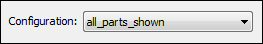
Observe in Assembly PathFinder that all the subassemblies and parts are displayed. Not all the parts are active.
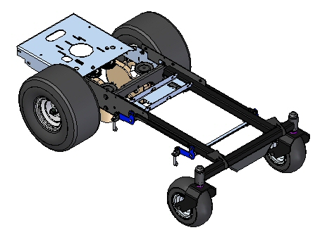
There are several existing configurations in the assembly. You will change the configuration and observe the result.
Choose Home tab→Configurations group→Configuration Options.
In the Display Configuration Options dialog box, select Ignore configuration settings and activate components as follows and Activate all parts.
This activates all the parts when selecting a configuration.
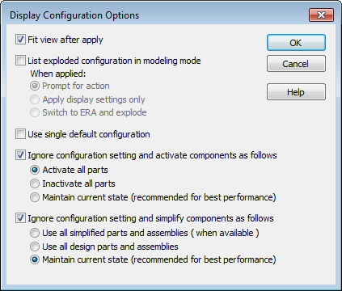
Choose Home tab→Configurations group→Display Configuration .
In the Display Configurations dialog box, select deck_assembly, click Apply, and then click Close.
Observe PathFinder and notice just the assembly making up the deck is shown. Because of the activation override, all the parts in the assembly are active.
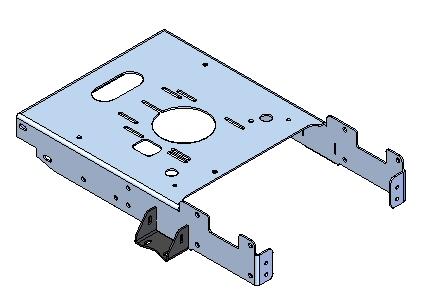
Add a few more parts to the current configuration.
In PathFinder, expand the subassembly rear_wheel_assembly_right.asm and all the subassemblies contained within it. Display all the parts in the subassembly.
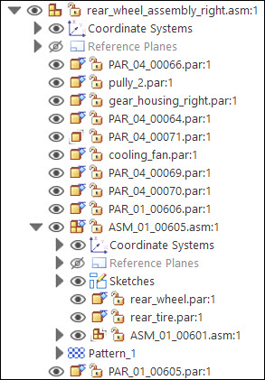
Choose Home tab→Configurations group→Display Configuration .
In the Display Configurations dialog box, select deck_assembly, click Update, and then click Close.
The configuration now has the display of the subassembly rear_wheel_assembly_right.asm.
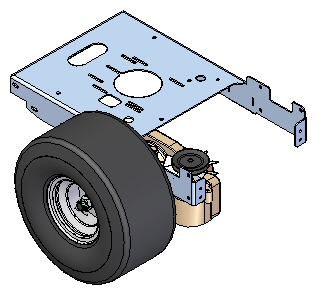
The update can quickly be applied using the Save Display Configuration button.
On the Home tab in the Configurations group, click the arrow beside the Current Configuration List to see a menu of all the available Display Configurations. Select the two shown.
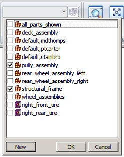
Using the Current Configuration List, you can combine Display Configurations, and you can select zones.
Practice turning on and off configurations using this menu. Also, display some parts in PathFinder, and update a configuration to include those parts.
Configurations used to explode a part are not visible until you display the Explode-Render-Animate environment.
Choose the Tools tab tab→Environs group→ERA command.
Click Home tab→Configurations group→Current Configuration List. Notice that now the explode configurations are available. Select the one shown.
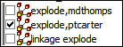
Notice the exploded view stored in the configuration is displayed.
Click Close ERA to exit the ERA environment.
There are more tools available to speed up working in large assemblies. Some of these are there to enhance performance. Others are there to prevent you from loading in more information than you really need to perform certain tasks. Here we will look at these tools.
Click the File button, and then click Settings→Options.
The Solid Edge Options dialog box is displayed.
On the General tab, review the following options, which can be used to improve performance.
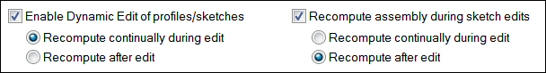
On the Assembly Open As tab, you can define behavior for opening assemblies based on the number of components.
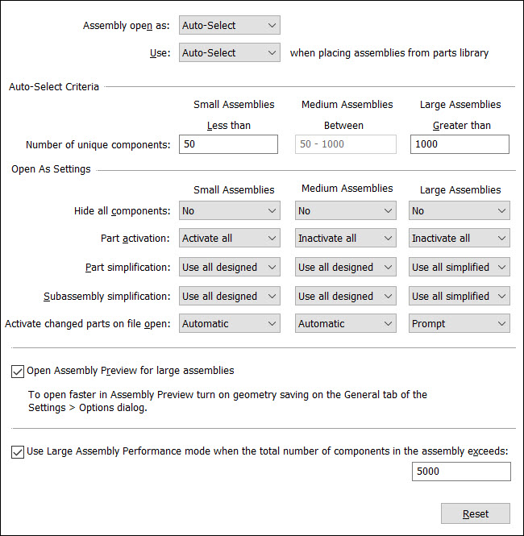
On the Assembly tab, review the items shown below, which you can use to speed up performance.
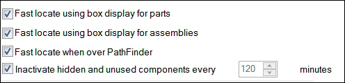
On the Assembly tab, select the Enable limited update and Enable limited save options.
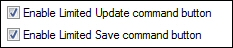
These options provide more control over what documents are updated and when they are updated.
-
The Limited Update command
 confines updates to only those documents that, in the current design session, have
been modified by you. If other documents have been modified by someone else, those
changes can be viewed and updated by using the Component Tracker. The Component Tracker shows the status of these documents and saves can be made that overrides the limited
save command if desired.
confines updates to only those documents that, in the current design session, have
been modified by you. If other documents have been modified by someone else, those
changes can be viewed and updated by using the Component Tracker. The Component Tracker shows the status of these documents and saves can be made that overrides the limited
save command if desired. -
The Limited Save command
 changes the behavior of Save when you work in the assembly environment. Selecting the Limited Save command confines the save operation to only those documents that you have opened
and have write access to. Limited Save acts on documents in the current assembly structure. Processing is from the active
level down. Part copies that reside in parent level assemblies are not updated with
Limited Save.
changes the behavior of Save when you work in the assembly environment. Selecting the Limited Save command confines the save operation to only those documents that you have opened
and have write access to. Limited Save acts on documents in the current assembly structure. Processing is from the active
level down. Part copies that reside in parent level assemblies are not updated with
Limited Save.Use the Component Tracker to view which documents are out of date. The Component Tracker shows the status of these documents and saves can be made that override the Limited Save command.
On the Home tab, in the Configurations group, notice the Unload Hidden Parts command. Use this command to inactivate any hidden parts.
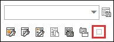
Save and close the assembly.
Use the Open command to redisplay the Open File dialog box for the assembly file you just closed. Under the More button, there are several options available for speeding up the opening of large assemblies.
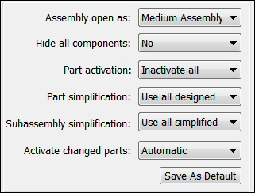
These options also can be predefined in the Solid Edge Options dialog box on the Assembly Open As tab. These can be set as the default, so that your assembly files always open using these settings.
This completes the activity.
In this activity you learned the following:
-
How to use configurations to show only a specific volume of an assembly as the focus of your work.
-
Options available to enhance performance when opening large assemblies, or working in them.
Click the Close button in the activity window.
Answer the following questions:
-
In an assembly, what is a display configuration?
-
Where are display configurations stored?
-
Are new parts added to an assembly automatically added to a display configuration?
-
If a subassembly has parts removed from it, how can a display configuration be updated to reflect these changes?
-
When creating an exploded view to place on a drawing sheet, where is the information about how to display the exploded view stored?
-
In an assembly, what is a display configuration ?
A display configuration allows you to control the display status of assembly components regardless of the components physical location in the design space.
-
Where are display configurations stored?
Display configurations are stored in a .cfg file external to the assembly.
-
Are new parts added to an assembly automatically added to a display configuration?
If you add components to the assembly, they are not added to an existing display configuration. You must apply the configuration, display the components you want to add to the configuration, then resave the configuration. When working in large, nested assemblies, shared by multiple users, it can sometimes be difficult to keep track of efficiently.
-
If a subassembly has parts removed from it, how can a display configuration be updated to reflect these changes?
Configuration manager contains tools that remove deleted parts in subassemblies from a display configuration.
-
When creating an exploded view to place on a drawing sheet, where is the information about how to display the exploded view stored?
Exploded view display parameters are saved in a display configuration. These displays can be viewed in the explode, render and animate environment.